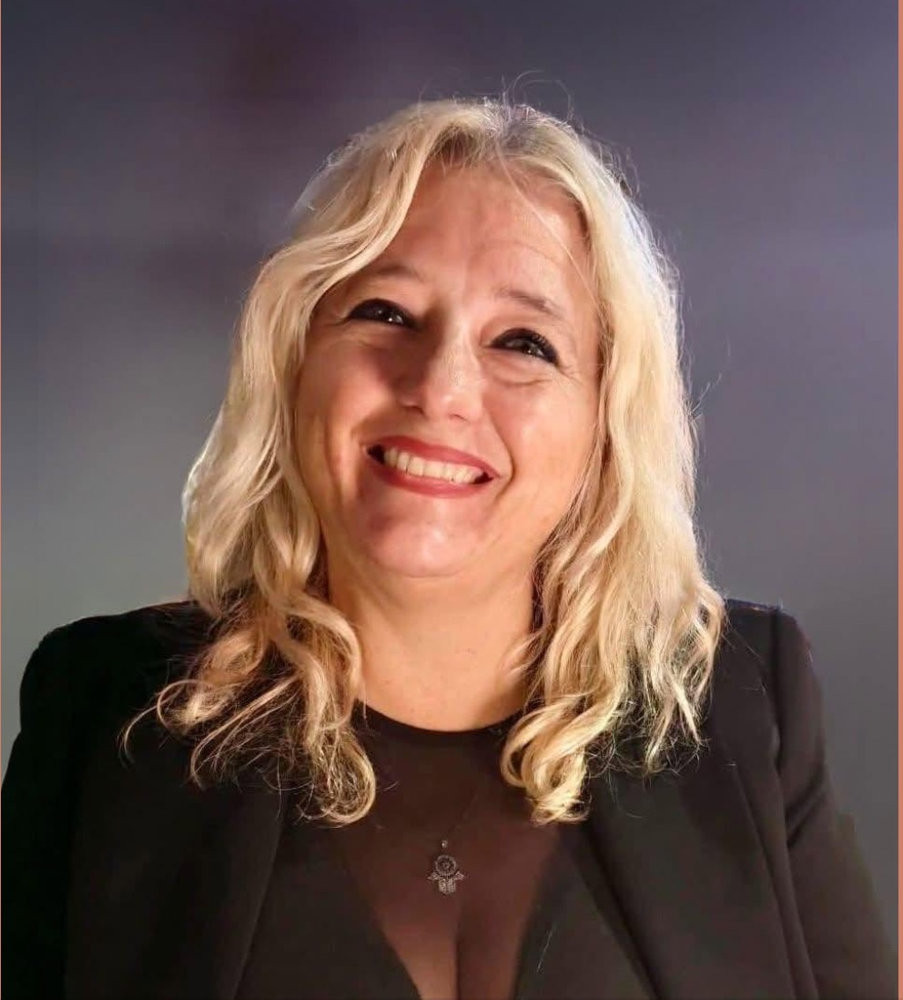
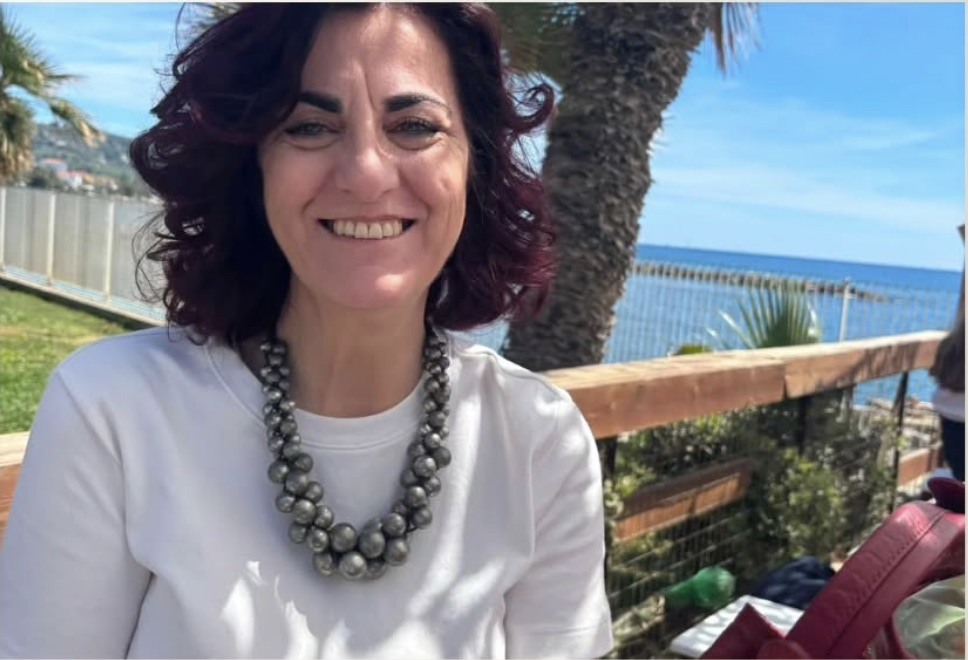
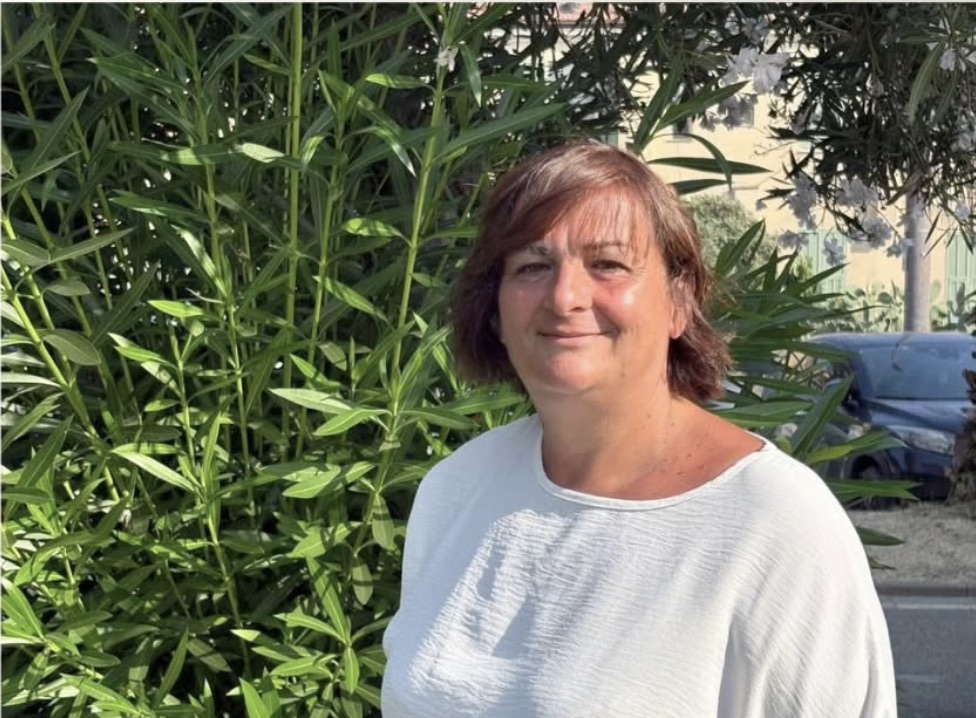
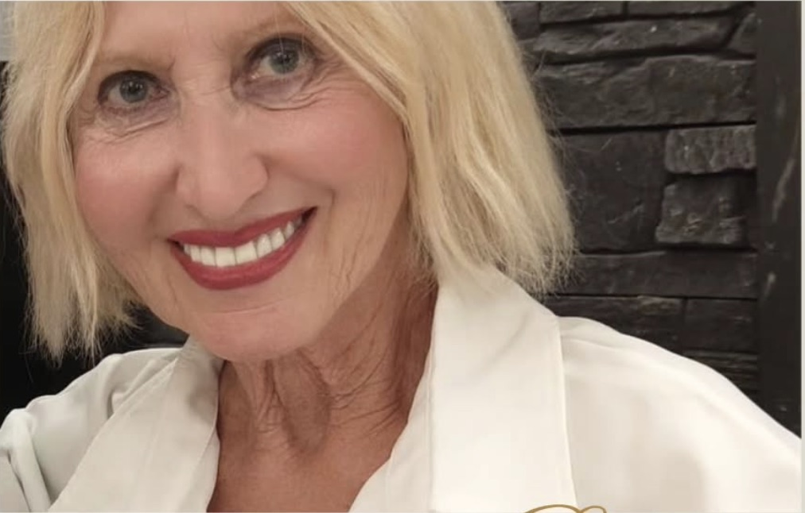
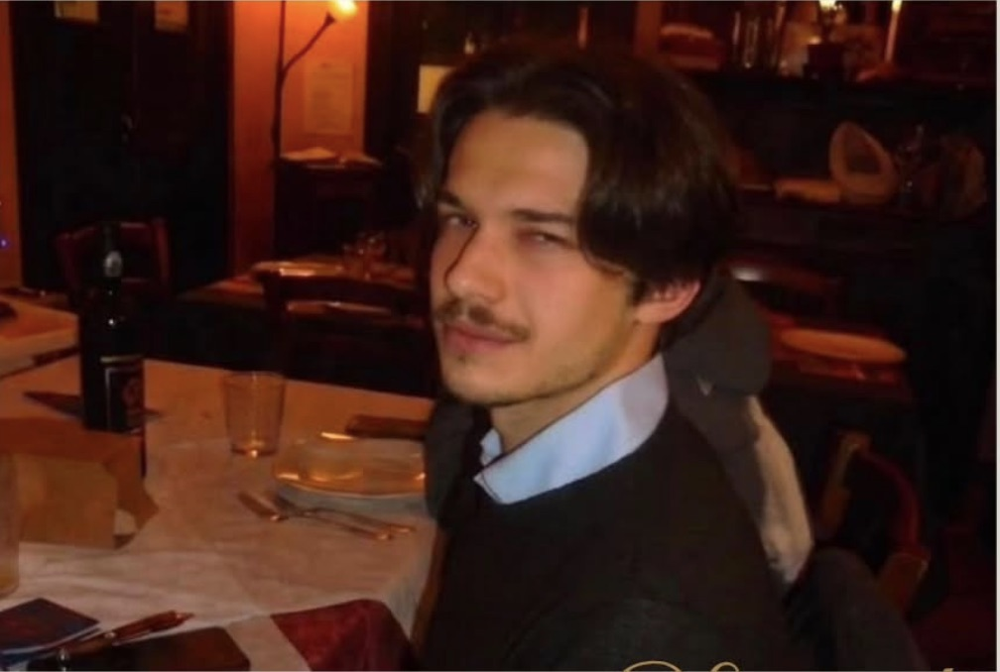
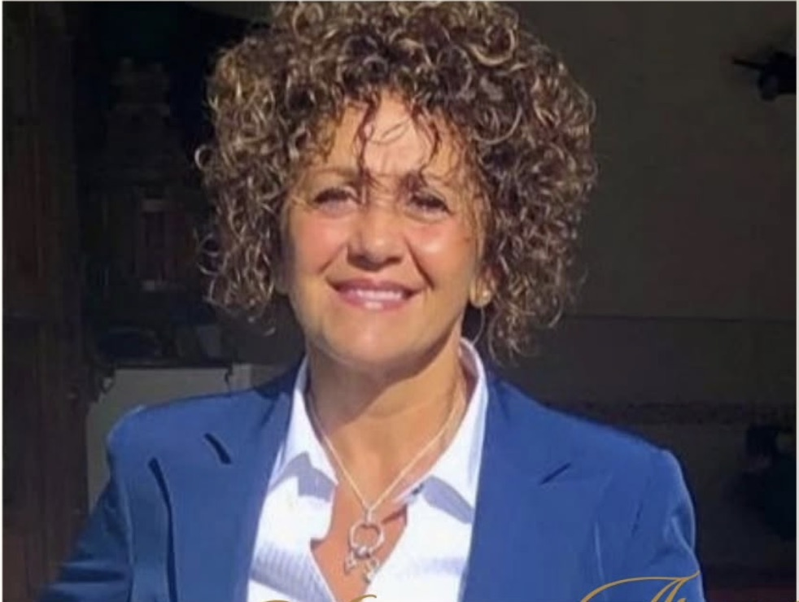

Maria Lorena Binello
[DA COMPLETARE: biografia e foto di Maria Lorena Binello]
Un'associazione nata ad Arma di Taggia per parlare di autismo con conoscenza, rispetto e concretezza.
Altre Menti nasce ad Arma di Taggia, in provincia di Imperia, dall'esperienza diretta di famiglie e persone che vivono l'autismo ogni giorno. [DA COMPLETARE: anno di fondazione e breve racconto della nascita dell'associazione]
Fin dall'inizio l'idea è semplice: nel nostro territorio mancavano occasioni per informarsi bene, incontrarsi e fare rete. Abbiamo deciso di crearle noi, portando esperti del settore a parlare con le famiglie, con la scuola e con tutta la cittadinanza.
Barbara Brugnolo è la fondatrice e presidente di Altre Menti.

Avvocato, lavora al Casinò di Sanremo, società partecipata del Comune. Sposata da quasi trent'anni con Paolo, che guida la storica azienda di famiglia, la Tipografia San Giuseppe, ha due figlie — il suo più grande orgoglio — che studiano medicina e ingegneria biomedica.
La danza è la sua grande passione: pratica da sempre danza classica e moderna, «il linguaggio nascosto dell'anima». L'altra è il viaggio: scoprire il mondo, le culture, le religioni e i popoli, con la convinzione che si abbia timore solo di ciò che non si conosce. Ama gli animali: Camilla, la Pomerania di casa, è il membro più piccolo ma più casinista della famiglia. Da alcuni anni fa parte di FHM Italia, la onlus con cui medici e professionisti locali hanno dato vita in Sierra Leone a due strutture per l'accoglienza di bambini abbandonati e maltrattati.
Quando ha pensato di dare vita ad Altre Menti è rimasta colpita dalla partecipazione e dall'entusiasmo delle persone che l'hanno fondata con lei. Crede che con l'aggregazione, il libero pensiero, lo scambio di idee e la partecipazione attiva di tutti si possa dare vita a progetti apparentemente semplici, ma capaci di essere un mattoncino per costruire un futuro migliore.
[DA COMPLETARE: biografia e foto di Maria Lorena Binello]

SegretariaPsicologa e psicoterapeuta, si è trasferita a Taggia da Milano 23 anni fa e qui ha scelto di costruire la sua famiglia. Ama il suo lavoro perché le permette di entrare in contatto con la complessità e la ricchezza delle persone e di confrontarsi con storie ogni volta diverse.
Crede che le varietà di appartenenza, di cultura e di identità siano una fonte di arricchimento e di sviluppo per una comunità, e che la partecipazione non sia solo una possibilità ma un dovere: per costruire un ambiente più giusto e più inclusivo, sulla strada del benessere collettivo.

ConsigliereNata a Strasburgo, in Francia, è sposata, ha tre figli e da poco la gioia di essere nonna di una splendida bambina. Lavora con passione come assistente scolastica presso la Jobel: ama stare con i bambini, che ogni giorno le insegnano a cogliere la semplicità, la spontaneità e il valore delle piccole cose.
È felice di far parte di questo progetto perché crede che l'incontro di menti diverse possa migliorare il futuro.

ConsigliereSposata con Lorenzo, ha un figlio e una nuora meravigliosi. Ama esserci nelle cose, partecipare, integrarsi: per anni ha fatto volontariato in Croce Verde e con gli anziani nelle case di riposo, dove ogni sabato rendeva belle le signore acconciando loro i capelli.
Sportiva da sempre, ama la danza, la palestra, la bici e la piscina. Ama l'arte sotto ogni forma: dipinge, disegna abiti e li cuce, e condivide tutto questo con chi, come lei, ama l'arte e il bello. Pensa che insieme si possa crescere e creare un futuro un po' migliore.

ConsigliereStudente di filosofia all'Università di Genova, interessato soprattutto all'ambito politico ed epistemologico, cerca con costante verve approcci diversi: dalla storia all'antropologia, fino a spingersi, da curioso profano, alle scienze. Accanto allo studio accademico coltiva una profonda passione per l'arte nelle sue varie forme, dalla saggistica alla narrativa fino alla musica.
Crede nella cultura come strumento reale di comprensione ed emancipazione della vita: «la nostra bussola in un mondo che sembrerebbe aver perso le coordinate».

ConsigliereSposata, con due figli, lavora all'Istituto Alberghiero di Arma di Taggia. Ama la creatività e la musica: ha studiato pianoforte. È molto legata alle tradizioni del suo comune — fa parte del Rione San Dalmazzo — e crede che la storia e la cultura locali vadano portate avanti e fatte conoscere.
Per lei essere parte attiva di una collettività, mettendo a disposizione ciò che si sa e ciò che si sa fare, è il modo più bello di sentirsi parte di un gruppo: confrontarsi, tirare fuori idee, fare nuove conoscenze e scoprire che tutto è cultura.
Crediamo in una comunità che conosce l'autismo, non che lo teme. Per noi le persone autistiche sono protagoniste: hanno diritti, idee, talenti e una voce che merita ascolto. Non parliamo di "superare la disabilità", ma di conoscenza, diritti e partecipazione.
Non esistono menti sbagliate. Esistono altre menti: modi di pensare, percepire e comunicare diversi da quelli della maggioranza, ma non per questo meno validi. Il nome è la nostra dichiarazione di principio: la differenza non è un difetto.
Due profili di testa affiancati e sovrapposti, dentro un cerchio doppio: oro all'esterno, bianco all'interno. L'elemento più importante è l'area in cui i due profili si intersecano: è lo spazio dell'incontro, dove due modi di pensare diversi si toccano e nasce qualcosa di nuovo. È il cuore della nostra idea di comunità.
Il modo migliore è venire a un incontro: sono aperti a tutti e gratuiti. Oppure scrivici, ti risponderemo volentieri.
Regola il sito secondo le tue preferenze. Le scelte vengono ricordate.